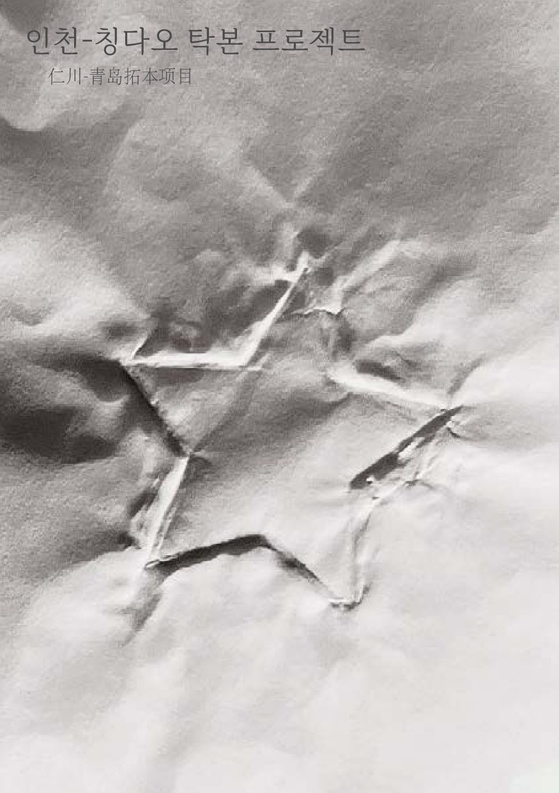
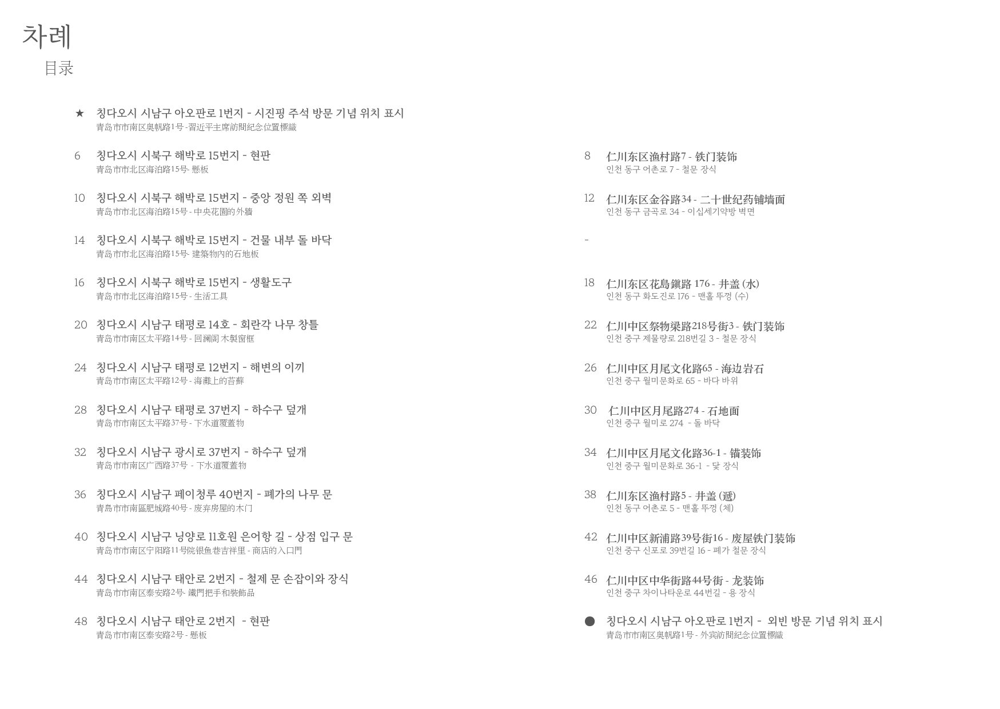
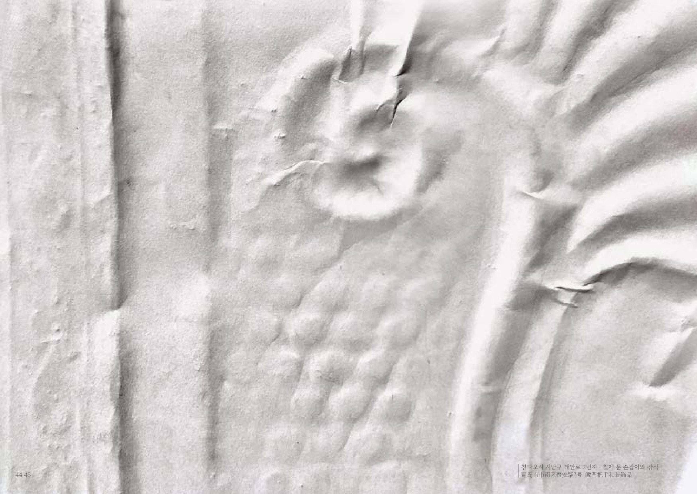
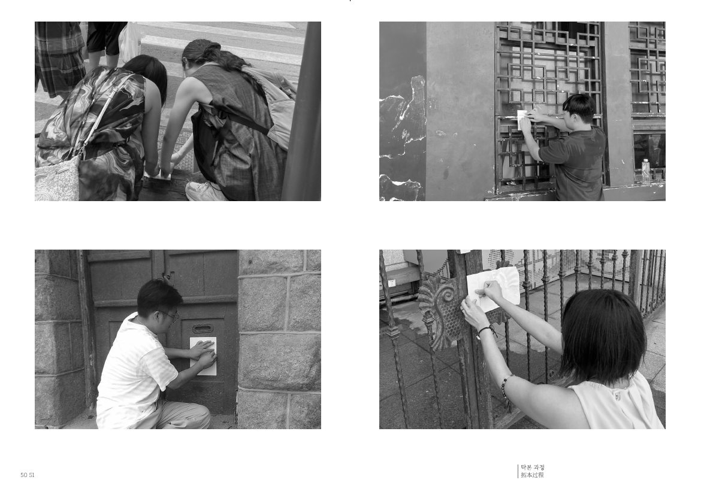
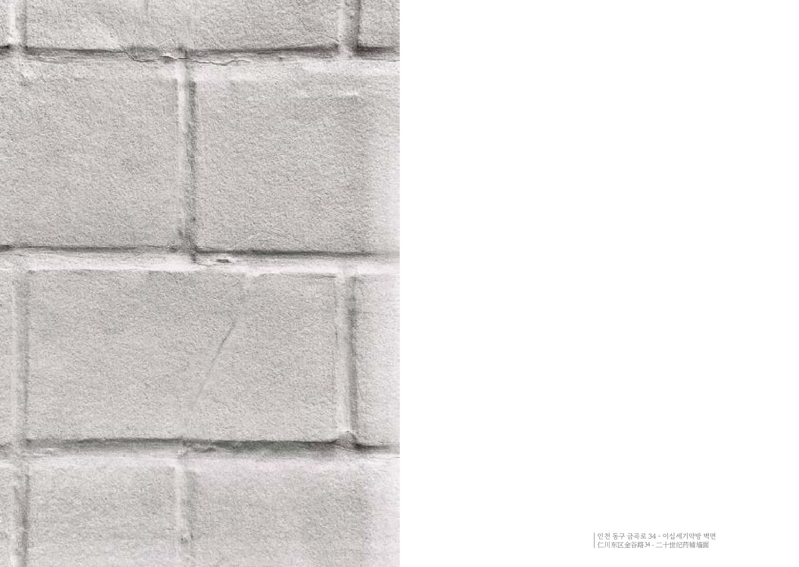

Works
2026
2025
2024
2023
~2022
Series
Exhibitions
Projects
Activities
Text
Artist's Note
Critic
Press
CV
Contact
KR
/
EN
Instagram
Index ×
인천-칭다오 탁본 프로젝트
도시기록 · 2025
Urban Archive · 2025
기관·주최
Organizer
인천광역시 · 한중 청년 공동 도시기록 ‘너의 도시, 나의 도시(너도나도)’
역할·형식
Role
기획·탁본·번역 참여, 4인 팀 작업





작품
Works
1
인천-칭다오 탁본 프로젝트
2025, 탁본집 (기획·탁본·번역 참여)